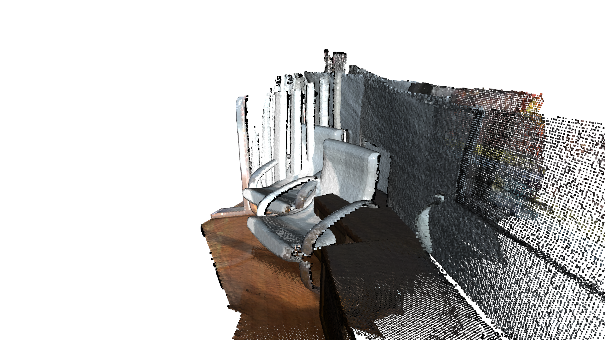
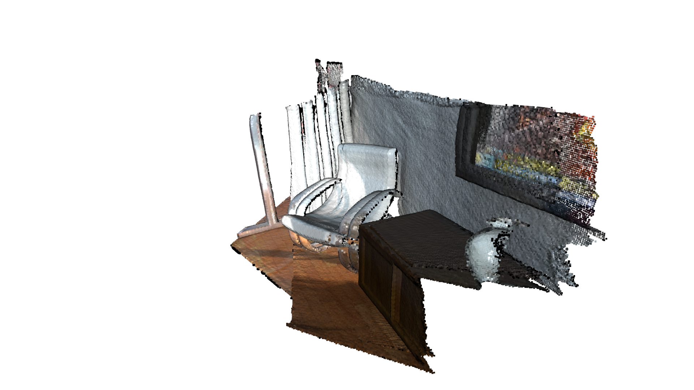
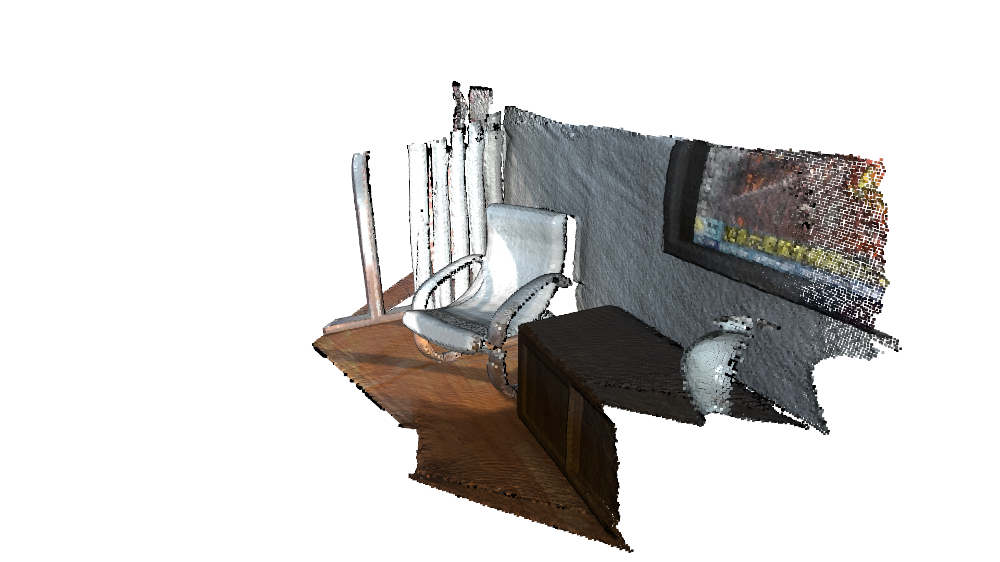
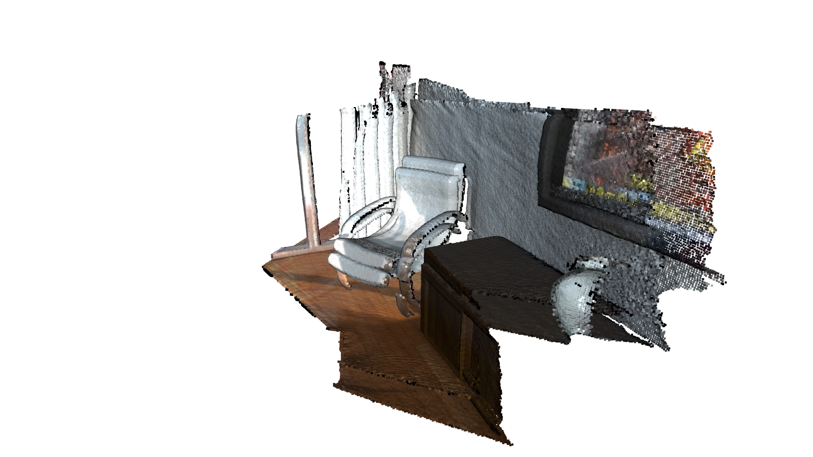
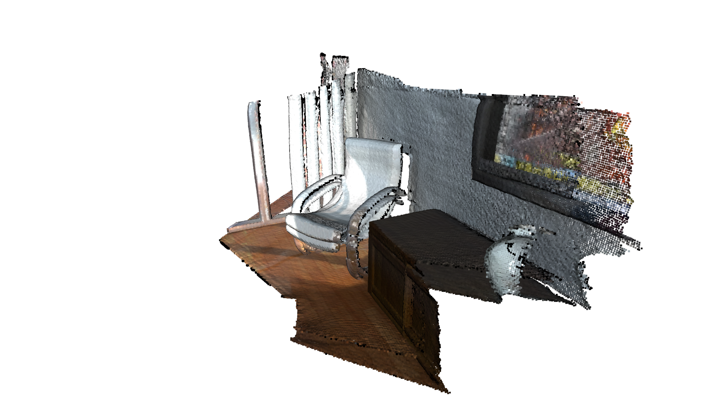
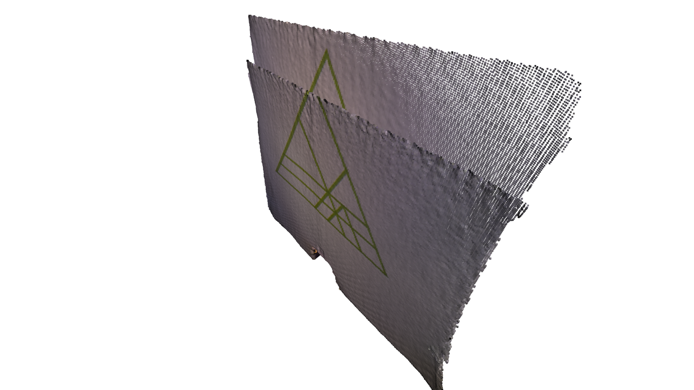
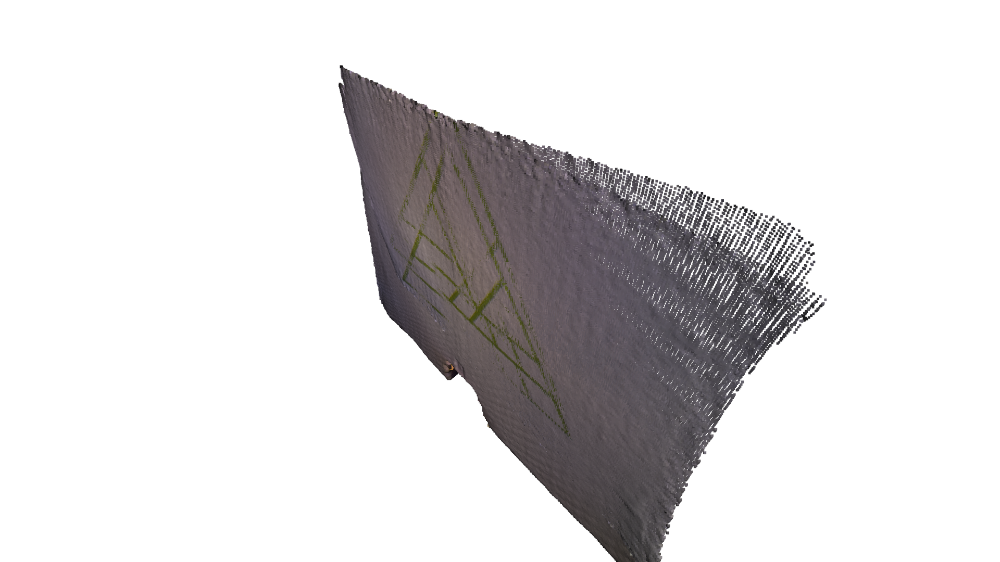
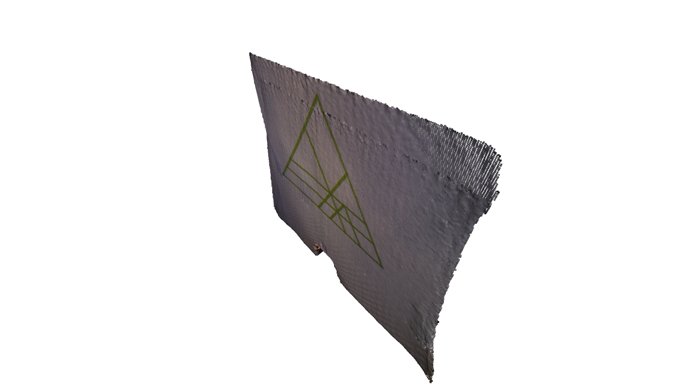

Note
This tutorial is generated from a Jupyter notebook that can be downloaded and run interactively.
ICP registration#
This tutorial demonstrates the ICP (Iterative Closest Point) registration algorithm. It has been a mainstay of geometric registration in both research and industry for many years. The inputs are two point clouds and an initial transformation that roughly aligns the source point cloud to the target point cloud. The output is a refined transformation that tightly aligns the two point clouds. A helper function draw_registration_result visualizes the alignment during the registration process. In
this tutorial, we show differnt ICP variants, and the API for using them.
Helper visualization function#
The function below visualizes a target point cloud and a source point cloud transformed with an alignment transformation. The target point cloud and the source point cloud are painted with cyan and yellow colors respectively. The more and tighter the two point-clouds overlap with each other, the better the alignment result.
[2]:
def draw_registration_result(source, target, transformation):
source_temp = source.clone()
target_temp = target.clone()
source_temp.transform(transformation)
# This is patched version for tutorial rendering.
# Use `draw` function for you application.
o3d.visualization.draw_geometries(
[source_temp.to_legacy(),
target_temp.to_legacy()],
zoom=0.4459,
front=[0.9288, -0.2951, -0.2242],
lookat=[1.6784, 2.0612, 1.4451],
up=[-0.3402, -0.9189, -0.1996])
Understanding ICP Algorithm#
In general, the ICP algorithm iterates over two steps:
Find correspondence set \(\mathcal{K}=\{(\mathbf{p}, \mathbf{q})\}\) from target point cloud \(\mathbf{P}\), and source point cloud \(\mathbf{Q}\) transformed with current transformation matrix \(\mathbf{T}\).
Update the transformation \(\mathbf{T}\) by minimizing an objective function \(E(\mathbf{T})\) defined over the correspondence set \(\mathcal{K}\).
Different variants of ICP use different objective functions \(E(\mathbf{T})\) [BeslAndMcKay1992] [ChenAndMedioni1992] [Park2017].
Understanding ICP API#
Note:
The Tensor based ICP implementation API is slightly different than the Eigen based ICP implementation, to support more functionalities.
Input#
PointClouds between which the Transformation is to be estimated. [open3d.t.PointCloud]
Source Tensor PointCloud. [Float32 or Float64 dtypes are supported].
Target Tensor PointCloud. [Float32 or Float64 dtypes are supported].
Note:
The initial alignment is usually obtained by a global registration algorithm.
[3]:
demo_icp_pcds = o3d.data.DemoICPPointClouds()
source = o3d.t.io.read_point_cloud(demo_icp_pcds.paths[0])
target = o3d.t.io.read_point_cloud(demo_icp_pcds.paths[1])
# For Colored-ICP `colors` attribute must be of the same dtype as `positions` and `normals` attribute.
source.point["colors"] = source.point["colors"].to(
o3d.core.Dtype.Float32) / 255.0
target.point["colors"] = target.point["colors"].to(
o3d.core.Dtype.Float32) / 255.0
# Initial guess transform between the two point-cloud.
# ICP algortihm requires a good initial allignment to converge efficiently.
trans_init = np.asarray([[0.862, 0.011, -0.507, 0.5],
[-0.139, 0.967, -0.215, 0.7],
[0.487, 0.255, 0.835, -1.4], [0.0, 0.0, 0.0, 1.0]])
draw_registration_result(source, target, trans_init)

Parameters#
Max correspondence Distances#
This is the radius of distance from each point in the source point-cloud in which the neighbour search will try to find a corresponding point in the target point-cloud.
It is a
doubleforicp, andutility.DoubleVectorformulti-scale-icp.One may typically keep this parameter between
1.0x - 3.0xvoxel-sizefor each scale.This parameter is most important for performance tuning, as a higher radius will take larger time (as the neighbour search will be performed over a larger radius).
[4]:
# For Vanilla ICP (double)
# Search distance for Nearest Neighbour Search [Hybrid-Search is used].
max_correspondence_distance = 0.07
[5]:
# For Multi-Scale ICP (o3d.utility.DoubleVector):
# `max_correspondence_distances` is proportianal to the resolution or the `voxel_sizes`.
# In general it is recommended to use values between 1x - 3x of the corresponding `voxel_sizes`.
# We may have a higher value of the `max_correspondence_distances` for the first coarse
# scale, as it is not much expensive, and gives us more tolerance to initial allignment.
max_correspondence_distances = o3d.utility.DoubleVector([0.3, 0.14, 0.07])
Initial Transform from Source to Target [open3d.core.Tensor]#
Initial estimate for transformation from source to target.
Transformation matrix Tensor of shape [4, 4] of type
Float64onCPU:0deviceThe initial alignment is usually obtained by a global registration algorithm. See Global registration for examples.
[6]:
# Initial alignment or source to target transform.
init_source_to_target = np.asarray([[0.862, 0.011, -0.507, 0.5],
[-0.139, 0.967, -0.215, 0.7],
[0.487, 0.255, 0.835, -1.4],
[0.0, 0.0, 0.0, 1.0]])
Estimation Method#
This sets the ICP method to compute the transformation between two point-clouds given the correspondences.
Options:
o3d.t.pipelines.registration.TransformationEstimationPointToPoint()
Point to Point ICP.
o3d.t.pipelines.registration.TransformationEstimationPointToPlane(robust_kernel)
Point to Plane ICP.
Requires
target point-cloudto havenormalsattribute (of same dtype aspositionattribute).
o3d.t.pipelines.registration.TransformationEstimationForColoredICP(robust_kernel, lambda)
Colored ICP.
Requires
targetpoint-cloud to havenormalsattribute (of same dtype aspositionattribute).Requires
sourceandtargetpoint-clouds to havecolorsattribute (of same dtype aspositionattribute).
o3d.t.pipelines.registration.TransformationEstimationForGeneralizedICP(robust_kernel, epsilon) [To be added].
Generalized ICP.
[7]:
# Select the `Estimation Method`, and `Robust Kernel` (for outlier-rejection).
estimation = treg.TransformationEstimationPointToPlane()
Estimation Method also supports Robust Kernels: Robust kernels are used for outlier rejection. More on this in Robust Kernel section.
robust_kernel = o3d.t.pipelines.registration.robust_kernel.RobustKernel(method, scale, shape)
Method options:
robust_kernel.RobustKernelMethod.L2Loss
robust_kernel.RobustKernelMethod.L1Loss
robust_kernel.RobustKernelMethod.HuberLoss
robust_kernel.RobustKernelMethod.CauchyLoss
robust_kernel.RobustKernelMethod.GMLoss
robust_kernel.RobustKernelMethod.TukeyLoss
robust_kernel.RobustKernelMethod.GeneralizedLoss
ICP Convergence Criteria [relative rmse, relative fitness, max iterations]#
This sets the condition for termination or when the scale iterations can be considered to be converged.
If the relative (of change in value from the last iteration) rmse and fitness are equal or less than the specified value, the iterations for that scale will be considered as converged/completed.
For
Multi-Scale ICPit is alistofICPConvergenceCriteria, for each scale of ICP, to provide more fine control over performance.One may keep the initial values of
relative_fitnessandrelative_rmselow as we just want to get an estimate transformation, and high for later iterations to fine-tune.Iterations on higher-resolution is more costly (takes more time), so we want to do fewer iterations on higher resolution.
[8]:
# Convergence-Criteria for Vanilla ICP:
criteria = treg.ICPConvergenceCriteria(relative_fitness=0.000001,
relative_rmse=0.000001,
max_iteration=50)
[9]:
# List of Convergence-Criteria for Multi-Scale ICP:
# We can control `ConvergenceCriteria` of each `scale` individually.
# We want to keep `relative_fitness` and `relative_rmse` high (more error tolerance)
# for initial scales, i.e. we will be happy to consider ICP converged, when difference
# between 2 successive iterations for that scale is smaller than this value.
# We expect less accuracy (more error tolerance) initial coarse-scale iteration,
# and want our later scale convergence to be more accurate (less error tolerance).
criteria_list = [
treg.ICPConvergenceCriteria(relative_fitness=0.0001,
relative_rmse=0.0001,
max_iteration=20),
treg.ICPConvergenceCriteria(0.00001, 0.00001, 15),
treg.ICPConvergenceCriteria(0.000001, 0.000001, 10)
]
Voxel Sizes#
It is the voxel size (lower voxel size corresponds to higher resolution), for each scale of multi-scale ICP.
We want to perform initial iterations on a coarse point-cloud (low-resolution or small voxel size) (as it is more time-efficient, and avoids local-minima), and then move to a dense point-cloud (high-resolution or small voxel size. Therefore the voxel sizes must be strictly decreasing order.
[10]:
# Vanilla ICP
voxel_size = 0.025
[11]:
# Lower `voxel_size` is equivalent to higher resolution,
# and we want to perform iterations from coarse to dense resolution,
# therefore `voxel_sizes` must be in strictly decressing order.
voxel_sizes = o3d.utility.DoubleVector([0.1, 0.05, 0.025])
Get Iteration-wise registration result using callback lambda function#
Optional lambda function, saves string to tensor dictionary of attributes such as “iteration_index”, “scale_index”, “scale_iteration_index”, “inlier_rmse”, “fitness”, “transformation”, on CPU device, updated after each iteration.
[12]:
# Example callback_after_iteration lambda function:
callback_after_iteration = lambda updated_result_dict : print("Iteration Index: {}, Fitness: {}, Inlier RMSE: {},".format(
updated_result_dict["iteration_index"].item(),
updated_result_dict["fitness"].item(),
updated_result_dict["inlier_rmse"].item()))
Vanilla ICP Example#
[13]:
# Input point-clouds
demo_icp_pcds = o3d.data.DemoICPPointClouds()
source = o3d.t.io.read_point_cloud(demo_icp_pcds.paths[0])
target = o3d.t.io.read_point_cloud(demo_icp_pcds.paths[1])
[14]:
# Search distance for Nearest Neighbour Search [Hybrid-Search is used].
max_correspondence_distance = 0.07
# Initial alignment or source to target transform.
init_source_to_target = np.asarray([[0.862, 0.011, -0.507, 0.5],
[-0.139, 0.967, -0.215, 0.7],
[0.487, 0.255, 0.835, -1.4],
[0.0, 0.0, 0.0, 1.0]])
# Select the `Estimation Method`, and `Robust Kernel` (for outlier-rejection).
estimation = treg.TransformationEstimationPointToPlane()
# Convergence-Criteria for Vanilla ICP
criteria = treg.ICPConvergenceCriteria(relative_fitness=0.000001,
relative_rmse=0.000001,
max_iteration=50)
# Down-sampling voxel-size.
voxel_size = 0.025
# Save iteration wise `fitness`, `inlier_rmse`, etc. to analyse and tune result.
save_loss_log = True
[15]:
s = time.time()
registration_icp = treg.icp(source, target, max_correspondence_distance,
init_source_to_target, estimation, criteria,
voxel_size, callback_after_iteration)
icp_time = time.time() - s
print("Time taken by ICP: ", icp_time)
print("Inlier Fitness: ", registration_icp.fitness)
print("Inlier RMSE: ", registration_icp.inlier_rmse)
draw_registration_result(source, target, registration_icp.transformation)
Iteration Index: 0, Fitness: 0.6111393549115969, Inlier RMSE: 0.03845276030918443,
Iteration Index: 1, Fitness: 0.6770603852454387, Inlier RMSE: 0.028204101052244978,
Iteration Index: 2, Fitness: 0.6771733604473817, Inlier RMSE: 0.021251237745576624,
Iteration Index: 3, Fitness: 0.676608484437666, Inlier RMSE: 0.018947875720585733,
Iteration Index: 4, Fitness: 0.676326046432808, Inlier RMSE: 0.018083618468148335,
Iteration Index: 5, Fitness: 0.6757611704230921, Inlier RMSE: 0.01771764204355242,
Iteration Index: 6, Fitness: 0.6755917076201774, Inlier RMSE: 0.017616028676977483,
Iteration Index: 7, Fitness: 0.6758176580240637, Inlier RMSE: 0.017643021285028468,
Iteration Index: 8, Fitness: 0.6757046828221206, Inlier RMSE: 0.0176128234978417,
Iteration Index: 9, Fitness: 0.6756481952211489, Inlier RMSE: 0.017601553568234785,
Iteration Index: 10, Fitness: 0.6755917076201774, Inlier RMSE: 0.017590660408457127,
Iteration Index: 11, Fitness: 0.6755917076201774, Inlier RMSE: 0.01758936788624091,
Iteration Index: 12, Fitness: 0.6755917076201774, Inlier RMSE: 0.017589693150664873,
Iteration Index: 13, Fitness: 0.6755917076201774, Inlier RMSE: 0.01758974414976776,
Iteration Index: 14, Fitness: 0.6755917076201774, Inlier RMSE: 0.017589740749832168,
Iteration Index: 15, Fitness: 0.6755917076201774, Inlier RMSE: 0.01758980874841915,
Iteration Index: 16, Fitness: 0.6755917076201774, Inlier RMSE: 0.017590274531672615,
Iteration Index: 17, Fitness: 0.6755917076201774, Inlier RMSE: 0.017590176502888535,
Iteration Index: 18, Fitness: 0.6755917076201774, Inlier RMSE: 0.017590293230742793,
Iteration Index: 19, Fitness: 0.6755917076201774, Inlier RMSE: 0.01759031759616805,
Iteration Index: 20, Fitness: 0.6755917076201774, Inlier RMSE: 0.01759031759616805,
Iteration Index: 21, Fitness: 0.6755917076201774, Inlier RMSE: 0.01759031759616805,
Iteration Index: 22, Fitness: 0.6755917076201774, Inlier RMSE: 0.01759031759616805,
Iteration Index: 23, Fitness: 0.6755917076201774, Inlier RMSE: 0.01759031759616805,
Iteration Index: 24, Fitness: 0.6755917076201774, Inlier RMSE: 0.01759031759616805,
Iteration Index: 25, Fitness: 0.6755917076201774, Inlier RMSE: 0.01759031759616805,
Iteration Index: 26, Fitness: 0.6755917076201774, Inlier RMSE: 0.01759031759616805,
Iteration Index: 27, Fitness: 0.6755917076201774, Inlier RMSE: 0.01759031759616805,
Iteration Index: 28, Fitness: 0.6755917076201774, Inlier RMSE: 0.01759031759616805,
Iteration Index: 29, Fitness: 0.6755917076201774, Inlier RMSE: 0.01759031759616805,
Iteration Index: 30, Fitness: 0.6755917076201774, Inlier RMSE: 0.01759031759616805,
Iteration Index: 31, Fitness: 0.6755917076201774, Inlier RMSE: 0.01759031759616805,
Iteration Index: 32, Fitness: 0.6755917076201774, Inlier RMSE: 0.01759031759616805,
Iteration Index: 33, Fitness: 0.6755917076201774, Inlier RMSE: 0.01759031759616805,
Iteration Index: 34, Fitness: 0.6755917076201774, Inlier RMSE: 0.01759031759616805,
Iteration Index: 35, Fitness: 0.6755917076201774, Inlier RMSE: 0.01759031759616805,
Iteration Index: 36, Fitness: 0.6755917076201774, Inlier RMSE: 0.01759031759616805,
Iteration Index: 37, Fitness: 0.6755917076201774, Inlier RMSE: 0.01759031759616805,
Iteration Index: 38, Fitness: 0.6755917076201774, Inlier RMSE: 0.01759031759616805,
Iteration Index: 39, Fitness: 0.6755917076201774, Inlier RMSE: 0.01759031759616805,
Iteration Index: 40, Fitness: 0.6755917076201774, Inlier RMSE: 0.01759031759616805,
Iteration Index: 41, Fitness: 0.6755917076201774, Inlier RMSE: 0.01759031759616805,
Iteration Index: 42, Fitness: 0.6755917076201774, Inlier RMSE: 0.01759031759616805,
Iteration Index: 43, Fitness: 0.6755917076201774, Inlier RMSE: 0.01759031759616805,
Iteration Index: 44, Fitness: 0.6755917076201774, Inlier RMSE: 0.01759031759616805,
Iteration Index: 45, Fitness: 0.6755917076201774, Inlier RMSE: 0.01759031759616805,
Iteration Index: 46, Fitness: 0.6755917076201774, Inlier RMSE: 0.01759031759616805,
Iteration Index: 47, Fitness: 0.6755917076201774, Inlier RMSE: 0.01759031759616805,
Iteration Index: 48, Fitness: 0.6755917076201774, Inlier RMSE: 0.01759031759616805,
Iteration Index: 49, Fitness: 0.6755917076201774, Inlier RMSE: 0.01759031759616805,
Time taken by ICP: 0.37858009338378906
Inlier Fitness: 0.6755917076201774
Inlier RMSE: 0.01759031759616805
Now let’s try with poor initial initialisation
[16]:
init_source_to_target = o3d.core.Tensor.eye(4, o3d.core.Dtype.Float32)
max_correspondence_distance = 0.07
[17]:
s = time.time()
registration_icp = treg.icp(source, target, max_correspondence_distance,
init_source_to_target, estimation, criteria,
voxel_size)
icp_time = time.time() - s
print("Time taken by ICP: ", icp_time)
print("Inlier Fitness: ", registration_icp.fitness)
print("Inlier RMSE: ", registration_icp.inlier_rmse)
draw_registration_result(source, target, registration_icp.transformation)
Time taken by ICP: 0.18932151794433594
Inlier Fitness: 0.3160481274360278
Inlier RMSE: 0.03345743162943091

As we can see, poor initial allignment might fail ICP convergence
Having large max_correspondence_distance might resolve this issue. But it will take longer to process.
[18]:
init_source_to_target = o3d.core.Tensor.eye(4, o3c.float32)
max_correspondence_distance = 0.5
[19]:
s = time.time()
# It is highly recommended to down-sample the point-cloud before using
# ICP algorithm, for better performance.
registration_icp = treg.icp(source, target, max_correspondence_distance,
init_source_to_target, estimation, criteria,
voxel_size)
icp_time = time.time() - s
print("Time taken by ICP: ", icp_time)
print("Inlier Fitness: ", registration_icp.fitness)
print("Inlier RMSE: ", registration_icp.inlier_rmse)
draw_registration_result(source, target, registration_icp.transformation)
Time taken by ICP: 8.092257022857666
Inlier Fitness: 0.8366943455911428
Inlier RMSE: 0.1333342265168623

We may resolve the above issues and get even better accuracy by using Multi-Scale ICP
Multi-Scale ICP Example#
Problems with using Vanilla-ICP (previous version):
Running the ICP algorithm on dense point-clouds is very slow.
It requires good initial alignment:
If the point-cloud is not well aligned, the convergence might get stuck in local-minima in initial iterations.
We need to have a larger
max_correspondence_distanceif the aligned point cloud does not have sufficient overlaps.
If point-cloud is heavily down-sampled (coarse), the obtained result will not be accurate.
These drawbacks can be solved using Multi-Scale ICP. In Multi-Scale ICP, we perform the initial iterations on coarse point-cloud to get a better estimate of initial alignment and use this alignment for convergence on a more dense point cloud. ICP on coarse point cloud is in-expensive, and allows us to use a larger max_correspondence_distance. It is also less likely for the convergence to get stuck in local minima. As we get a good estimate, it takes fewer iterations on dense point-cloud to
converge to a more accurate transform.
It is recommended to use Multi-Scale ICP over ICP, for efficient convergence, especially for large point clouds.
[20]:
# Input point-clouds
demo_icp_pcds = o3d.data.DemoICPPointClouds()
source = o3d.t.io.read_point_cloud(demo_icp_pcds.paths[0])
target = o3d.t.io.read_point_cloud(demo_icp_pcds.paths[1])
[21]:
voxel_sizes = o3d.utility.DoubleVector([0.1, 0.05, 0.025])
# List of Convergence-Criteria for Multi-Scale ICP:
criteria_list = [
treg.ICPConvergenceCriteria(relative_fitness=0.0001,
relative_rmse=0.0001,
max_iteration=20),
treg.ICPConvergenceCriteria(0.00001, 0.00001, 15),
treg.ICPConvergenceCriteria(0.000001, 0.000001, 10)
]
# `max_correspondence_distances` for Multi-Scale ICP (o3d.utility.DoubleVector):
max_correspondence_distances = o3d.utility.DoubleVector([0.3, 0.14, 0.07])
# Initial alignment or source to target transform.
init_source_to_target = o3d.core.Tensor.eye(4, o3d.core.Dtype.Float32)
# Select the `Estimation Method`, and `Robust Kernel` (for outlier-rejection).
estimation = treg.TransformationEstimationPointToPlane()
# Save iteration wise `fitness`, `inlier_rmse`, etc. to analyse and tune result.
callback_after_iteration = lambda loss_log_map : print("Iteration Index: {}, Scale Index: {}, Scale Iteration Index: {}, Fitness: {}, Inlier RMSE: {},".format(
loss_log_map["iteration_index"].item(),
loss_log_map["scale_index"].item(),
loss_log_map["scale_iteration_index"].item(),
loss_log_map["fitness"].item(),
loss_log_map["inlier_rmse"].item()))
[22]:
# Setting Verbosity to Debug, helps in fine-tuning the performance.
# o3d.utility.set_verbosity_level(o3d.utility.VerbosityLevel.Debug)
s = time.time()
registration_ms_icp = treg.multi_scale_icp(source, target, voxel_sizes,
criteria_list,
max_correspondence_distances,
init_source_to_target, estimation,
callback_after_iteration)
ms_icp_time = time.time() - s
print("Time taken by Multi-Scale ICP: ", ms_icp_time)
print("Inlier Fitness: ", registration_ms_icp.fitness)
print("Inlier RMSE: ", registration_ms_icp.inlier_rmse)
draw_registration_result(source, target, registration_ms_icp.transformation)
Iteration Index: 0, Scale Index: 0, Scale Iteration Index: 0, Fitness: 0.6401799100449775, Inlier RMSE: 0.14351717216792606,
Iteration Index: 1, Scale Index: 0, Scale Iteration Index: 1, Fitness: 0.6731634182908546, Inlier RMSE: 0.13844672811649125,
Iteration Index: 2, Scale Index: 0, Scale Iteration Index: 2, Fitness: 0.6949025487256372, Inlier RMSE: 0.1375614461049805,
Iteration Index: 3, Scale Index: 0, Scale Iteration Index: 3, Fitness: 0.7203898050974513, Inlier RMSE: 0.1356468401271611,
Iteration Index: 4, Scale Index: 0, Scale Iteration Index: 4, Fitness: 0.7391304347826086, Inlier RMSE: 0.13408012706014305,
Iteration Index: 5, Scale Index: 0, Scale Iteration Index: 5, Fitness: 0.7526236881559221, Inlier RMSE: 0.13060008981502083,
Iteration Index: 6, Scale Index: 0, Scale Iteration Index: 6, Fitness: 0.7661169415292354, Inlier RMSE: 0.1292358665155328,
Iteration Index: 7, Scale Index: 0, Scale Iteration Index: 7, Fitness: 0.7796101949025487, Inlier RMSE: 0.1262821610358537,
Iteration Index: 8, Scale Index: 0, Scale Iteration Index: 8, Fitness: 0.7916041979010495, Inlier RMSE: 0.12182291380615025,
Iteration Index: 9, Scale Index: 0, Scale Iteration Index: 9, Fitness: 0.800599700149925, Inlier RMSE: 0.11848438077401817,
Iteration Index: 10, Scale Index: 0, Scale Iteration Index: 10, Fitness: 0.8035982008995503, Inlier RMSE: 0.11566467389290395,
Iteration Index: 11, Scale Index: 0, Scale Iteration Index: 11, Fitness: 0.8020989505247377, Inlier RMSE: 0.11275411804800141,
Iteration Index: 12, Scale Index: 0, Scale Iteration Index: 12, Fitness: 0.800599700149925, Inlier RMSE: 0.11063885950043648,
Iteration Index: 13, Scale Index: 0, Scale Iteration Index: 13, Fitness: 0.7998500749625187, Inlier RMSE: 0.10872682915721095,
Iteration Index: 14, Scale Index: 0, Scale Iteration Index: 14, Fitness: 0.795352323838081, Inlier RMSE: 0.10511079917368263,
Iteration Index: 15, Scale Index: 0, Scale Iteration Index: 15, Fitness: 0.7916041979010495, Inlier RMSE: 0.10167555751905624,
Iteration Index: 16, Scale Index: 0, Scale Iteration Index: 16, Fitness: 0.7901049475262368, Inlier RMSE: 0.10049261153588378,
Iteration Index: 17, Scale Index: 0, Scale Iteration Index: 17, Fitness: 0.787856071964018, Inlier RMSE: 0.09897539118271745,
Iteration Index: 18, Scale Index: 0, Scale Iteration Index: 18, Fitness: 0.787856071964018, Inlier RMSE: 0.0988085780813123,
Iteration Index: 19, Scale Index: 0, Scale Iteration Index: 19, Fitness: 0.7871064467766117, Inlier RMSE: 0.09823055182177051,
Iteration Index: 20, Scale Index: 1, Scale Iteration Index: 0, Fitness: 0.7260987294313684, Inlier RMSE: 0.06398667050668265,
Iteration Index: 21, Scale Index: 1, Scale Iteration Index: 1, Fitness: 0.732347427619246, Inlier RMSE: 0.053849153989854424,
Iteration Index: 22, Scale Index: 1, Scale Iteration Index: 2, Fitness: 0.7244324099146011, Inlier RMSE: 0.044681877263218234,
Iteration Index: 23, Scale Index: 1, Scale Iteration Index: 3, Fitness: 0.7190168714851073, Inlier RMSE: 0.040403006988136175,
Iteration Index: 24, Scale Index: 1, Scale Iteration Index: 4, Fitness: 0.717142262028744, Inlier RMSE: 0.038842692136881095,
Iteration Index: 25, Scale Index: 1, Scale Iteration Index: 5, Fitness: 0.7158925223911685, Inlier RMSE: 0.038171027478208774,
Iteration Index: 26, Scale Index: 1, Scale Iteration Index: 6, Fitness: 0.7144344928139971, Inlier RMSE: 0.037597410361473974,
Iteration Index: 27, Scale Index: 1, Scale Iteration Index: 7, Fitness: 0.7136013330556135, Inlier RMSE: 0.037347459801253424,
Iteration Index: 28, Scale Index: 1, Scale Iteration Index: 8, Fitness: 0.7125598833576339, Inlier RMSE: 0.037017003508386756,
Iteration Index: 29, Scale Index: 1, Scale Iteration Index: 9, Fitness: 0.712143303478442, Inlier RMSE: 0.0368934111761684,
Iteration Index: 30, Scale Index: 1, Scale Iteration Index: 10, Fitness: 0.712143303478442, Inlier RMSE: 0.03690282283408671,
Iteration Index: 31, Scale Index: 1, Scale Iteration Index: 11, Fitness: 0.711935013538846, Inlier RMSE: 0.03684253459472442,
Iteration Index: 32, Scale Index: 1, Scale Iteration Index: 12, Fitness: 0.711935013538846, Inlier RMSE: 0.03685160236708418,
Iteration Index: 33, Scale Index: 1, Scale Iteration Index: 13, Fitness: 0.711935013538846, Inlier RMSE: 0.03685595561946199,
Iteration Index: 34, Scale Index: 1, Scale Iteration Index: 14, Fitness: 0.7117267235992502, Inlier RMSE: 0.03678380042193824,
Iteration Index: 35, Scale Index: 2, Scale Iteration Index: 0, Fitness: 0.6777947240580693, Inlier RMSE: 0.019671558743579544,
Iteration Index: 36, Scale Index: 2, Scale Iteration Index: 1, Fitness: 0.6764955092357228, Inlier RMSE: 0.018168620877737886,
Iteration Index: 37, Scale Index: 2, Scale Iteration Index: 2, Fitness: 0.6761000960289216, Inlier RMSE: 0.017779314755265934,
Iteration Index: 38, Scale Index: 2, Scale Iteration Index: 3, Fitness: 0.6757046828221206, Inlier RMSE: 0.017623626191049846,
Iteration Index: 39, Scale Index: 2, Scale Iteration Index: 4, Fitness: 0.6758176580240637, Inlier RMSE: 0.017629199683999904,
Iteration Index: 40, Scale Index: 2, Scale Iteration Index: 5, Fitness: 0.6757611704230921, Inlier RMSE: 0.017613094431503103,
Iteration Index: 41, Scale Index: 2, Scale Iteration Index: 6, Fitness: 0.6757046828221206, Inlier RMSE: 0.01759912592408924,
Iteration Index: 42, Scale Index: 2, Scale Iteration Index: 7, Fitness: 0.6755917076201774, Inlier RMSE: 0.0175776895152299,
Iteration Index: 43, Scale Index: 2, Scale Iteration Index: 8, Fitness: 0.6755917076201774, Inlier RMSE: 0.017580120266868282,
Iteration Index: 44, Scale Index: 2, Scale Iteration Index: 9, Fitness: 0.6755917076201774, Inlier RMSE: 0.017581308587613354,
Time taken by Multi-Scale ICP: 0.15364527702331543
Inlier Fitness: 0.6755917076201774
Inlier RMSE: 0.017582279708046513

Multi-Scale ICP on CUDA device Example#
[23]:
# The algorithm runs on the same device as the source and target point-cloud.
source_cuda = source.cuda(0)
target_cuda = target.cuda(0)
[24]:
s = time.time()
registration_ms_icp = treg.multi_scale_icp(source_cuda, target_cuda,
voxel_sizes, criteria_list,
max_correspondence_distances,
init_source_to_target, estimation)
ms_icp_time = time.time() - s
print("Time taken by Multi-Scale ICP: ", ms_icp_time)
print("Inlier Fitness: ", registration_ms_icp.fitness)
print("Inlier RMSE: ", registration_ms_icp.inlier_rmse)
draw_registration_result(source.cpu(), target.cpu(),
registration_ms_icp.transformation)
Time taken by Multi-Scale ICP: 0.05107712745666504
Inlier Fitness: 0.6756481952211489
Inlier RMSE: 0.017611326787369208
Case of no correspondences.#
In case of no_correspondences the fitness and inlier_rmse is 0.
[25]:
max_correspondence_distance = 0.02
init_source_to_target = np.asarray([[1.0, 0.0, 0.0, 5], [0.0, 1.0, 0.0, 7],
[0.0, 0.0, 1.0, 10], [0.0, 0.0, 0.0, 1.0]])
registration_icp = treg.icp(source, target, max_correspondence_distance,
init_source_to_target)
print("Inlier Fitness: ", registration_icp.fitness)
print("Inlier RMSE: ", registration_icp.inlier_rmse)
print("Transformation: \n", registration_icp.transformation)
if registration_icp.fitness == 0 and registration_icp.inlier_rmse == 0:
print("ICP Convergence Failed, as no correspondence were found")
[Open3D WARNING] 0 correspondence present between the pointclouds. Try increasing the max_correspondence_distance parameter.
[Open3D WARNING] 0 correspondence present between the pointclouds. Try increasing the max_correspondence_distance parameter.
Inlier Fitness: 0.0
Inlier RMSE: 0.0
Transformation:
[[1.0 0.0 0.0 0.0],
[0.0 1.0 0.0 0.0],
[0.0 0.0 1.0 0.0],
[0.0 0.0 0.0 1.0]]
Tensor[shape={4, 4}, stride={4, 1}, Float64, CPU:0, 0x55bc41bef210]
ICP Convergence Failed, as no correspondence were found
Information Matrix#
Information Matrix gives us futher information about how well the point-clouds are alligned.
[26]:
information_matrix = treg.get_information_matrix(
source, target, max_correspondence_distances[2],
registration_ms_icp.transformation)
print(information_matrix)
[[845355. -521694. -421338. 0.0 -200571. 256811.],
[-521694. 911277. -389118. 200571. 0.0 -267019.],
[-421338. -389118. 1.12202e+06 -256811. 267019. 0.0],
[0.0 200571. -256811. 130593. 0.0 0.0],
[-200571. 0.0 267019. 0.0 130593. 0.0],
[256811. -267019. 0.0 0.0 0.0 130593.]]
Tensor[shape={6, 6}, stride={6, 1}, Float64, CPU:0, 0x55bc5ebe9b10]
Now that we have a basic understanding of the ICP algorithm and the API, let’s experiment with the different versions to understand the difference
Initial Allignment#
[27]:
demo_icp_pcds = o3d.data.DemoICPPointClouds()
source = o3d.t.io.read_point_cloud(demo_icp_pcds.paths[0])
target = o3d.t.io.read_point_cloud(demo_icp_pcds.paths[1])
# Initial guess transform between the two point-cloud.
# ICP algortihm requires a good initial allignment to converge efficiently.
trans_init = np.asarray([[0.862, 0.011, -0.507, 0.5],
[-0.139, 0.967, -0.215, 0.7],
[0.487, 0.255, 0.835, -1.4], [0.0, 0.0, 0.0, 1.0]])
draw_registration_result(source, target, trans_init)

[28]:
# Search distance for Nearest Neighbour Search [Hybrid-Search is used].
max_correspondence_distance = 0.02
print("Initial alignment")
evaluation = treg.evaluate_registration(source, target,
max_correspondence_distance, trans_init)
print("Fitness: ", evaluation.fitness)
print("Inlier RMSE: ", evaluation.inlier_rmse)
Initial alignment
Fitness: 0.17472276007745116
Inlier RMSE: 0.01177106094721789
Point-To-Point ICP Registration#
We first show a point-to-point ICP algorithm [BeslAndMcKay1992] using the objective
\begin{equation} E(\mathbf{T}) = \sum_{(\mathbf{p},\mathbf{q})\in\mathcal{K}}\|\mathbf{p} - \mathbf{T}\mathbf{q}\|^{2} \end{equation}
The class TransformationEstimationPointToPoint provides functions to compute the residuals and Jacobian matrices of the point-to-point ICP objective.
[29]:
# Input point-clouds
demo_icp_pcds = o3d.data.DemoICPPointClouds()
source = o3d.t.io.read_point_cloud(demo_icp_pcds.paths[0])
target = o3d.t.io.read_point_cloud(demo_icp_pcds.paths[1])
[30]:
# Select the `Estimation Method`, and `Robust Kernel` (for outlier-rejection).
estimation = treg.TransformationEstimationPointToPoint()
[31]:
# Search distance for Nearest Neighbour Search [Hybrid-Search is used].
max_correspondence_distance = 0.02
# Initial alignment or source to target transform.
init_source_to_target = trans_init
# Convergence-Criteria for Vanilla ICP
criteria = treg.ICPConvergenceCriteria(relative_fitness=0.0000001,
relative_rmse=0.0000001,
max_iteration=30)
# Down-sampling voxel-size. If voxel_size < 0, original scale is used.
voxel_size = -1
# Save iteration wise `fitness`, `inlier_rmse`, etc. to analyse and tune result.
save_loss_log = True
[32]:
print("Apply Point-to-Point ICP")
s = time.time()
reg_point_to_point = treg.icp(source, target, max_correspondence_distance,
init_source_to_target, estimation, criteria,
voxel_size)
icp_time = time.time() - s
print("Time taken by Point-To-Point ICP: ", icp_time)
print("Fitness: ", reg_point_to_point.fitness)
print("Inlier RMSE: ", reg_point_to_point.inlier_rmse)
draw_registration_result(source, target, reg_point_to_point.transformation)
Apply Point-to-Point ICP
Time taken by Point-To-Point ICP: 0.5530855655670166
Fitness: 0.3724646063318832
Inlier RMSE: 0.007761172758253192

The fitness score increases from 0.174722 to 0.372474. The inlier_rmse reduces from 0.011771 to 0.007761. By default, icp runs until convergence or reaches a maximum number of iterations (30 by default). It can be changed to allow more computation time and to improve the results further.
[33]:
criteria = treg.ICPConvergenceCriteria(relative_fitness=0.0000001,
relative_rmse=0.0000001,
max_iteration=1000)
[34]:
print("Apply Point-to-Point ICP")
s = time.time()
reg_point_to_point = treg.icp(source, target, max_correspondence_distance,
init_source_to_target, estimation, criteria,
voxel_size)
icp_time = time.time() - s
print("Time taken by Point-To-Point ICP: ", icp_time)
print("Fitness: ", reg_point_to_point.fitness)
print("Inlier RMSE: ", reg_point_to_point.inlier_rmse)
draw_registration_result(source, target, reg_point_to_point.transformation)
Apply Point-to-Point ICP
Time taken by Point-To-Point ICP: 26.512720823287964
Fitness: 0.6211280710136545
Inlier RMSE: 0.0065857574273401704
The final alignment is tight. The fitness score improves to 0.620972. The inlier_rmse reduces to 0.006581.
Point-to-Plane ICP Registration#
The point-to-plane ICP algorithm [ChenAndMedioni1992] uses a different objective function
\begin{equation} E(\mathbf{T}) = \sum_{(\mathbf{p},\mathbf{q})\in\mathcal{K}}\big((\mathbf{p} - \mathbf{T}\mathbf{q})\cdot\mathbf{n}_{\mathbf{p}}\big)^{2}, \end{equation}
where \(\mathbf{n}_{\mathbf{p}}\) is the normal of point \(\mathbf{p}\). [Rusinkiewicz2001] has shown that the point-to-plane ICP algorithm has a faster convergence speed than the point-to-point ICP algorithm.
The class TransformationEstimationPointToPlane provides functions to compute the residuals and Jacobian matrices of the point-to-plane ICP objective.
[35]:
estimation = treg.TransformationEstimationPointToPlane()
criteria = treg.ICPConvergenceCriteria(relative_fitness=0.0000001,
relative_rmse=0.0000001,
max_iteration=30)
[36]:
print("Apply Point-to-Plane ICP")
s = time.time()
reg_point_to_plane = treg.icp(source, target, max_correspondence_distance,
init_source_to_target, estimation, criteria,
voxel_size)
icp_time = time.time() - s
print("Time taken by Point-To-Plane ICP: ", icp_time)
print("Fitness: ", reg_point_to_plane.fitness)
print("Inlier RMSE: ", reg_point_to_plane.inlier_rmse)
draw_registration_result(source, target, reg_point_to_plane.transformation)
Apply Point-to-Plane ICP
Time taken by Point-To-Plane ICP: 0.6132276058197021
Fitness: 0.620972162848593
Inlier RMSE: 0.0065814487683483105
The point-to-plane ICP reaches tight alignment within 30 iterations (a fitness score of 0.620972 and an inlier_rmse score of 0.006581).
Colored ICP Registration#
This tutorial demonstrates an ICP variant that uses both geometry and color for registration. It implements the algorithm of [Park2017]. The color information locks the alignment along the tangent plane. Thus this algorithm is more accurate and more robust than prior point cloud registration algorithms, while the running speed is comparable to that of ICP registration.
[37]:
# Overriding visualization function, according to best camera view for colored-icp sample data.
def draw_registration_result(source, target, transformation):
source_temp = source.clone()
target_temp = target.clone()
source_temp.transform(transformation)
# This is patched version for tutorial rendering.
# Use `draw` function for you application.
o3d.visualization.draw_geometries(
[source_temp.to_legacy(),
target_temp.to_legacy()],
zoom=0.5,
front=[-0.2458, -0.8088, 0.5342],
lookat=[1.7745, 2.2305, 0.9787],
up=[0.3109, -0.5878, -0.7468])
[38]:
print("1. Load two point clouds and show initial pose")
demo_cicp_pcds = o3d.data.DemoColoredICPPointClouds()
source = o3d.t.io.read_point_cloud(demo_cicp_pcds.paths[0])
target = o3d.t.io.read_point_cloud(demo_cicp_pcds.paths[1])
# For Colored-ICP `colors` attribute must be of the same dtype as `positions` and `normals` attribute.
source.point["colors"] = source.point["colors"].to(
o3d.core.Dtype.Float32) / 255.0
target.point["colors"] = target.point["colors"].to(
o3d.core.Dtype.Float32) / 255.0
# draw initial alignment
current_transformation = np.identity(4)
draw_registration_result(source, target, current_transformation)
1. Load two point clouds and show initial pose

Setting baseline with point-to-plane registration#
We first run Point-to-plane ICP as a baseline approach. The visualization below shows misaligned green triangle textures. This is because a geometric constraint does not prevent two planar surfaces from slipping.
[39]:
estimation = treg.TransformationEstimationPointToPlane()
[40]:
max_correspondence_distance = 0.02
init_source_to_target = np.identity(4)
[41]:
print("Apply Point-to-Plane ICP")
s = time.time()
reg_point_to_plane = treg.icp(source, target, max_correspondence_distance,
init_source_to_target, estimation)
icp_time = time.time() - s
print("Time taken by Point-To-Plane ICP: ", icp_time)
print("Fitness: ", reg_point_to_plane.fitness)
print("Inlier RMSE: ", reg_point_to_plane.inlier_rmse)
draw_registration_result(source, target, reg_point_to_plane.transformation)
Apply Point-to-Plane ICP
Time taken by Point-To-Plane ICP: 0.42490172386169434
Fitness: 0.9746756777751884
Inlier RMSE: 0.004222278610565657

Colored Registration#
The core function for colored point cloud registration is registration_colored_icp. Following [Park2017], it runs ICP iterations (see Point-to-point ICP for details) with a joint optimization objective
\begin{equation} E(\mathbf{T}) = (1-\delta)E_{C}(\mathbf{T}) + \delta E_{G}(\mathbf{T}) \end{equation}
where \(\mathbf{T}\) is the transformation matrix to be estimated. \(E_{C}\) and \(E_{G}\) are the photometric and geometric terms, respectively. \(\delta\in[0,1]\) is a weight parameter that has been determined empirically.
The geometric term \(E_{G}\) is the same as the Point-to-plane ICP objective
\begin{equation} E_{G}(\mathbf{T}) = \sum_{(\mathbf{p},\mathbf{q})\in\mathcal{K}}\big((\mathbf{p} - \mathbf{T}\mathbf{q})\cdot\mathbf{n}_{\mathbf{p}}\big)^{2}, \end{equation}
where \(\mathcal{K}\) is the correspondence set in the current iteration. \(\mathbf{n}_{\mathbf{p}}\) is the normal of point \(\mathbf{p}\).
The color term \(E_{C}\) measures the difference between the color of point \(\mathbf{q}\) (denoted as \(C(\mathbf{q})\)) and the color of its projection on the tangent plane of \(\mathbf{p}\).
\begin{equation} E_{C}(\mathbf{T}) = \sum_{(\mathbf{p},\mathbf{q})\in\mathcal{K}}\big(C_{\mathbf{p}}(\mathbf{f}(\mathbf{T}\mathbf{q})) - C(\mathbf{q})\big)^{2}, \end{equation}
where \(C_{\mathbf{p}}(\cdot)\) is a precomputed function continuously defined on the tangent plane of \(\mathbf{p}\). Function\(\mathbf{f}(\cdot)\) projects a 3D point to the tangent plane. For more details, refer to [Park2017].
To further improve efficiency, [Park2017] proposes a multi-scale registration scheme.
[42]:
estimation = treg.TransformationEstimationForColoredICP()
[43]:
current_transformation = np.identity(4)
criteria_list = [
treg.ICPConvergenceCriteria(relative_fitness=0.0001,
relative_rmse=0.0001,
max_iteration=50),
treg.ICPConvergenceCriteria(0.00001, 0.00001, 30),
treg.ICPConvergenceCriteria(0.000001, 0.000001, 14)
]
max_correspondence_distances = o3d.utility.DoubleVector([0.08, 0.04, 0.02])
voxel_sizes = o3d.utility.DoubleVector([0.04, 0.02, 0.01])
[44]:
# colored pointcloud registration
# This is implementation of following paper
# J. Park, Q.-Y. Zhou, V. Koltun,
# Colored Point Cloud Registration Revisited, ICCV 2017
print("Colored point cloud registration")
s = time.time()
reg_multiscale_icp = treg.multi_scale_icp(source, target, voxel_sizes,
criteria_list,
max_correspondence_distances,
init_source_to_target, estimation)
icp_time = time.time() - s
print("Time taken by Colored ICP: ", icp_time)
print("Fitness: ", reg_point_to_plane.fitness)
print("Inlier RMSE: ", reg_point_to_plane.inlier_rmse)
draw_registration_result(source, target, reg_multiscale_icp.transformation)
Colored point cloud registration
Time taken by Colored ICP: 0.19477272033691406
Fitness: 0.9746756777751884
Inlier RMSE: 0.004222278610565657
